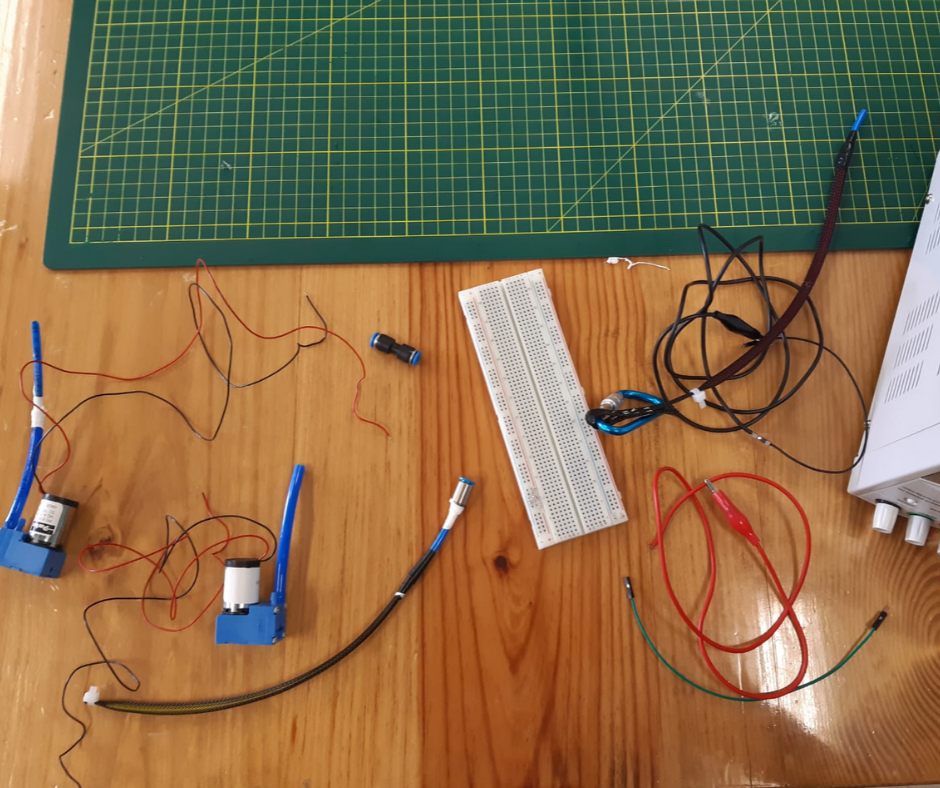

Metodología: - Asegurar las conexiones de salida entre el motor Parker E165-11-090 y el actuador McKibben - Alimentar el motor mediante la fuente (9VDC)
Resultados: - La contracción del actuador McKibben fue de 25%, de acuerdo con lo indicado en la bibliografía - El tiempo de contracción máximo fue de 2.43 segundos. Dicho tiempo es optimo para nuestro proyecto
Metodología: - Repetir los pasos de la prueba anterior - Conectar un TEE al motor Parker - Conectar dos actuadores neumáticos al TEE en las dos salidas restantes (No afecta el orden o posición)
Resultados: - Demora más para que ambos actuadores lleguen a su contracción máxima, la cual sigue siendo del 25%.
Resultados: - El orden del actuador y los motores no afecta significativamente en como se infla el actuador - Con el uso de dos motores el actuador se infla más rápido, sin embargo la contracción máxima es la misma
Metodología: - Repetir 2 veces los pasos de las prueba 1 conectando los dos motores en paralelo para mantener el voltaje de 9V que requiere el motor Parker - Conectar el sistema en la pierna de un participante para observar los resultados

Resultados: - El sistema logra levantar el pie en aproximadamente 15° , lo cual es lo suficiente para la dorsiflexión